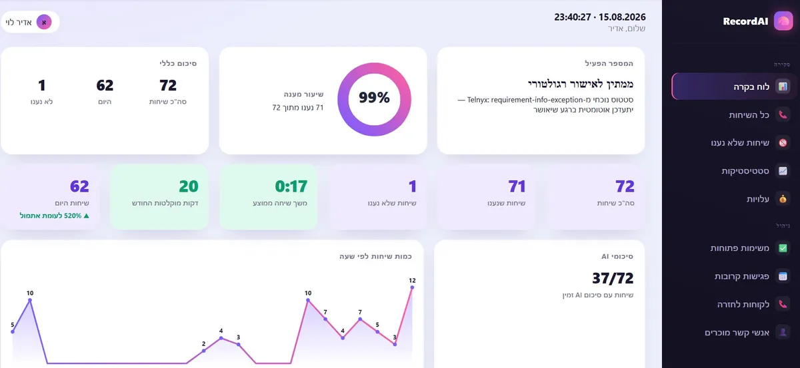

לקוח מסיים שיחת טלפון איתכם, ותוך כמה שניות מקבל בוואטסאפ הודעה מסודרת: על מה דיברתם, מה סוכם, ואם נקבע תאריך — גם קישור ניווט מוכן ליעד. הוא לא ביקש את זה. הוא פשוט מקבל אותו, ומיד מרגיש שהוא מדבר עם עסק שמסודר.
הבעיה: רוב העסקים משאירים את הלקוח עם זיכרון בלבד
אחרי שיחת טלפון עסקית רגילה, ללקוח לא נשאר שום דבר מוחשי — רק מה שהוא זוכר. אם היה צריך לזכור מחיר, תאריך או פרט טכני, הסיכוי לבלבול או לשכחה גבוה. וכשיש בלבול, הלקוח לא תמיד יחזור לשאול — הוא פשוט יניח הנחה שגויה, או יאבד אמון בזה שהעסק "מסודר".
הפתרון: כל שיחה מסתיימת עם סיכום כתוב
זו אחת התכונות המרכזיות ב-StopZkor, המערכת ש-A.L Systems, בניהולו של אדיר לוי משדרות, בנתה להקלטת שיחות באייפון: מיד בסיום השיחה נשלח ללקוח סיכום אוטומטי בוואטסאפ.

- סיכום מיידי — תוך שניות מסיום השיחה, לא שעות אחר כך כשכבר שכחתם לשלוח
- תוכן ברור — על מה דיברתם ומי היה בשיחה, בלי שהלקוח צריך לבקש
- קישור ניווט אוטומטי — אם נקבע תאריך ויעד, הוא נכנס ליומן עם ניווט מוכן
לקוח לא זוכר בהכרח מה אמרתם לו בשיחה. הוא כן זוכר אם קיבל אחריה הודעה מסודרת שגרמה לו להרגיש בידיים טובות.
מה זה משנה בעיני הלקוח
סיכום שמגיע בלי שביקשו אותו הוא סוג של רף שירות שרוב העסקים הקטנים והבינוניים פשוט לא נותנים — והוא נראה כמו משהו ששייך לחברות גדולות עם מערכות יקרות. כשזה קורה אוטומטית בכל שיחה, זה בונה תחושת מקצועיות בלי מאמץ נוסף מהצד שלכם. אין צורך לשנות הרגלים: מתקשרים ומקבלים שיחות בדיוק כרגיל, וההקלטה, התמלול והסיכום פועלים ברקע.
לא רק חוויית לקוח — גם תיעוד לעצמכם
אותו תמלול וסיכום שנשלחים ללקוח נשארים גם בארכיון שלכם, מתויגים לפי איש קשר ותאריך. כך הסיכום בוואטסאפ הוא לא רק תוספת שירות — הוא הדרך שבה אתם יודעים, בלי להקליד מילה, מה סוכם עם כל לקוח. אם הלקוח מתקשר בעוד חודש ושואל "אבל אמרתם לי משהו אחר", התמלול כבר שמור ונגיש.
סיכום ידני מול סיכום אוטומטי
| מה קורה בפועל | בלי סיכום | סיכום ידני, אם נזכרים | StopZkor |
|---|---|---|---|
| זמן קבלת הסיכום | אין | שעות או ימים אחר כך | תוך שניות מסיום השיחה |
| תלות בזיכרון הנציג | מלאה | גבוהה | אין |
| עדכון יומן מתאריך שהוזכר | לא | רק אם נזכרים | אוטומטי עם ניווט |
| תיעוד שנשאר גם לעסק | לא | תלוי אם נשמר | ארכיון מתויג לפי לקוח |
למי זה הכי מתאים
לעצמאים, יועצים ואנשי מכירות שסוגרים פרטים חשובים בטלפון ורוצים גם תיעוד מדויק לעצמם וגם חוויית שירות שמבדילה אותם מהמתחרים — בלי לכתוב סיכום ידני אחרי כל שיחה.
שאלות נפוצות
הלקוח צריך לבקש את הסיכום בוואטסאפ?
לא. הסיכום נשלח אוטומטית תוך שניות מסיום כל שיחה, בלי שום פעולה מהצד שלכם או מהלקוח.
מה כתוב בסיכום שנשלח?
על מה דיברתם ומי היה בשיחה. אם הוזכר תאריך או יעד, הם נכנסים אוטומטית ליומן עם קישור ניווט מוכן ב-Waze או Google Maps.
צריך לשנות משהו בהרגלי השיחה כדי שזה יעבוד?
לא. ההקלטה והסיכום פועלים ברקע באמצעות StopZkor — מתקשרים ומקבלים שיחות בדיוק כרגיל, והכול קורה מאחורי הקלעים.
זה מחליף תיעוד לעצמי, או רק משהו שהלקוח מקבל?
שניהם. אותו תמלול וסיכום שנשלחים ללקוח נשארים גם בארכיון שלכם, כך שיש גם חוויית שירות מהירה וגם תיעוד מדויק לשימוש פנימי.